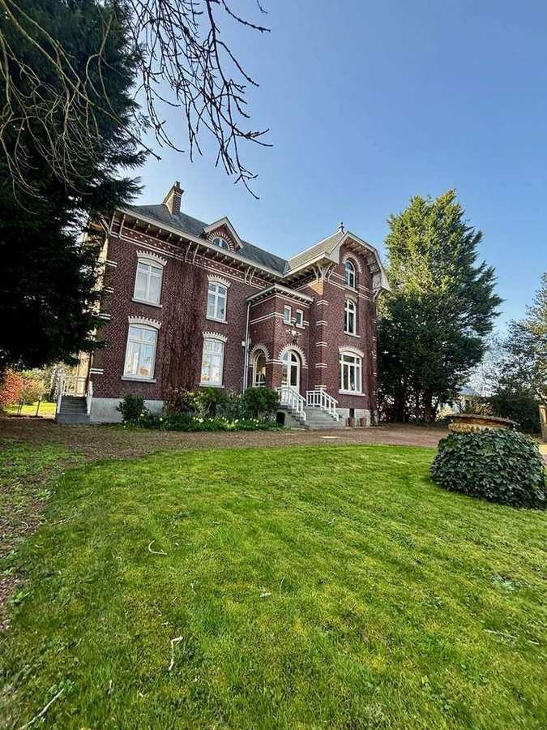
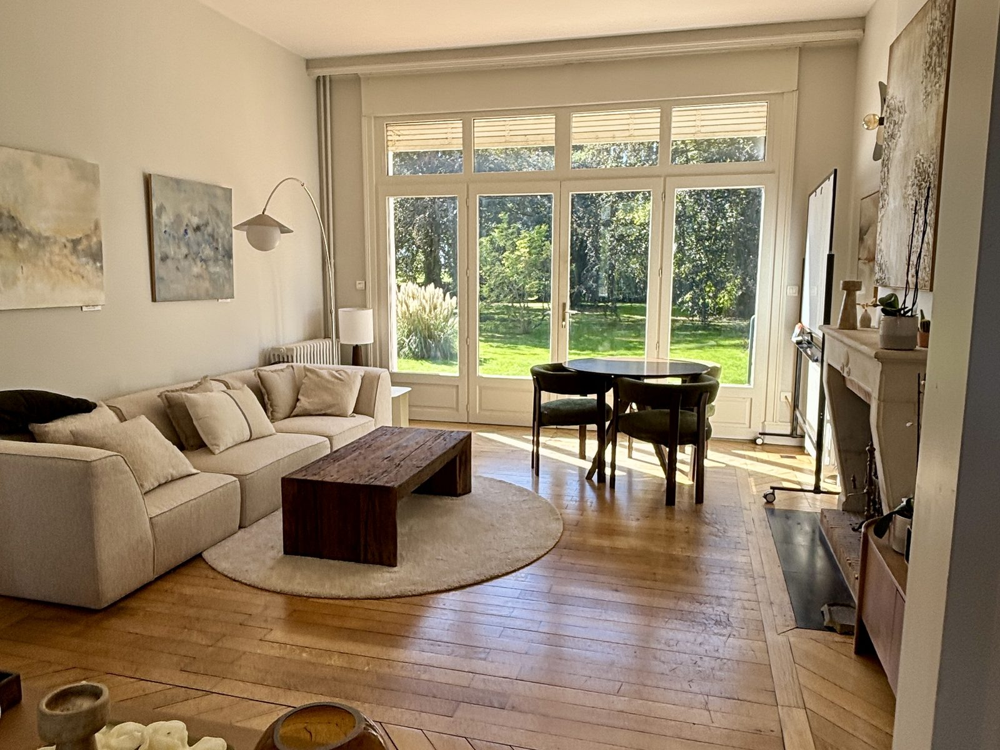
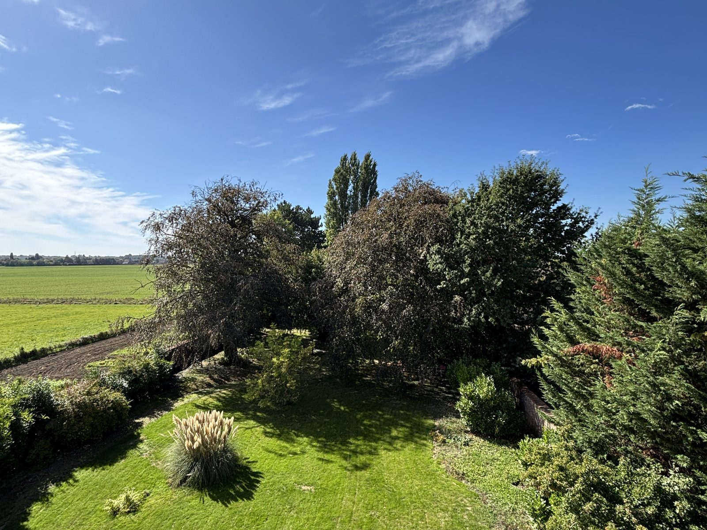
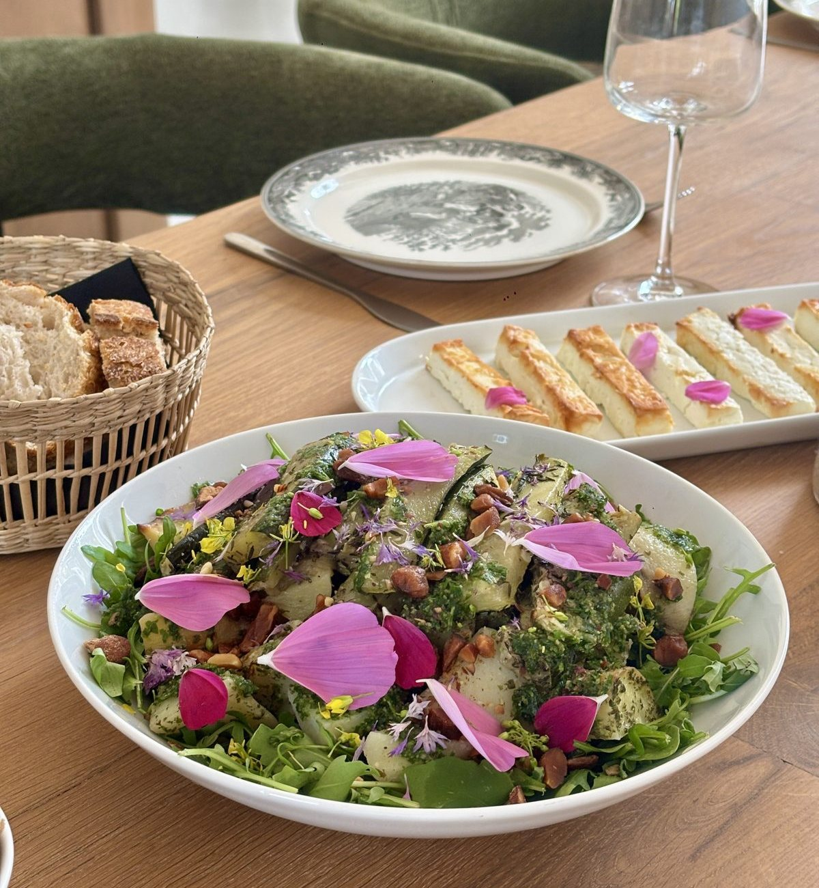

Votre état des lieux arrive dans votre boîte mail.
La suite de votre état des lieuxTravailler à son compte, sans avancer en solo.
À son compte aussi, la réussite se construit à plusieurs. Avec des personnes de confiance qui vous soutiennent, on s’engage davantage, et les objectifs suivent. Nous vous proposons un groupe de dix, pendant un an, avec des dirigeants, des cadres et d’autres indépendants : d’autres horizons pour éclairer le vôtre.
Votre réussite se construit à plusieurs. Nous en posons les fondations.
Pas une transformation : une évolution, à votre rythme. Voici ce que vous y gagnez, étape par étape, et pourquoi.
-
Les fondations
Vous avancez à plusieurs.
Pourquoi : chaque semaine, ce sont les mêmes dix personnes, dans un cadre qui tient. Des relations vraies se construisent, et avec elles la confiance, le soutien et la cohésion.
La confiance, le soutien, la cohésion -
L’engagement
Vous voyez mieux vos atouts.
Pourquoi : chaque semaine, vous sortez du quotidien, au vert, et d’autres horizons éclairent le vôtre. Le recul vient, les décisions deviennent plus nettes, et l’énergie grandit.
L’énergie et la lucidité : votre engagement -
La réussite
Vos objectifs suivent.
Pourquoi : ils ne sont pas notre point de départ, ils sont une conséquence. Quand la confiance, le soutien et l’énergie sont là, on avance mieux vers ce qu’on se fixe. C’est ce que montrent les réponses à l’état des lieux.
La performance, en conséquence
Un parcours construit avec un premier groupe.
Depuis juin 2026, un premier groupe de dirigeants vit ce parcours à la Greatly House. Séance après séance, leurs retours nous ont appris ce qui fait vraiment grandir l’énergie et la lucidité.
« Pour moi, la lucidité ne naît pas de la réflexion ou de l’accumulation d’informations, mais de ces espaces de silence où les choses se déposent naturellement. »Un membre du premier groupe, après un atelier, juillet 2026
Ce qui change vraiment prend du temps. L’atelier du mois ouvre un thème ; le temps ensemble de chaque semaine le fait vivre, jusqu’à ce qu’il reste. C’est ce rythme, tenu sur un an, qui fait grandir l’énergie et la lucidité. Nous l’ouvrons aujourd’hui à des groupes mêlés : dirigeants, cadres, indépendants, professions libérales.
Un an, quatre saisons.
- Saison 1Se poser
- Saison 2S’écouter
- Saison 3S’ouvrir
- Saison 4Incarner
L’atelier, pour ouvrir un thème.
Un thème qui compte dans sa vie professionnelle, exploré à plusieurs, en partant de ce qui va déjà bien.
- La confiance
- L’énergie
- Le temps
- Les décisions et le silence
- Les émotions
- L’intuition
- L’attention
- Les relations et le parler vrai
- Le collectif
- L’incertitude
Le temps ensemble, pour le faire vivre.
2 h 30 entre deux ateliers, même jour, même heure. Trois façons de se retrouver, qui se relaient :
- Entre nous. La parole circule, et chacun trouve sa propre réponse.
- Activité physique douce. On bouge, on respire, on prend l’air dans le parc : le corps comme chemin vers la lucidité.
- Activité physique plus dynamique. Se dépenser ensemble, chacun à son rythme, pour repartir avec de l’élan.
La recommandation des ateliers.
L’énergie en repartant d’une séance, contre 6,3 en arrivant.
La qualité de l’accompagnement des coachs.
Votre année se vit à la Greatly House.




- Le groupe
- Dix personnes aux parcours différents, fermé une fois constitué
- Le rythme
- Une activité par semaine, un atelier par mois
- Quand
- Dès janvier 2027, en semaine, en journée
- Où
- La Greatly House, à 10 min de Lille
Le groupe, quelques règles simples.
- Des parcours mêlés : dirigeants, cadres, indépendants, professions libérales.
- Jamais deux personnes de la même structure.
- On s’appelle par les prénoms. On vient comme on est.
- Pendant les ateliers, le téléphone passe en mode avion.
- Des places sont ouvertes à des professionnels du monde associatif.
Trois étapes, et vous démarrez.
- Vous visitez la maison1 h 30 autour d’un café, pour parler de vous, du programme et des prochaines disponibilités.
- Vous recevez le programmeLe déroulé et les thèmes, envoyés à votre adresse.
- Vous démarrezLe prochain groupe démarre en janvier 2027.
Le tarif vous est donné pendant la visite.
Venez visiter la maison.
1 h 30 autour d’un café, à la Greatly House : pour découvrir le lieu, parler de vous, du programme et des prochaines disponibilités. Sans engagement.